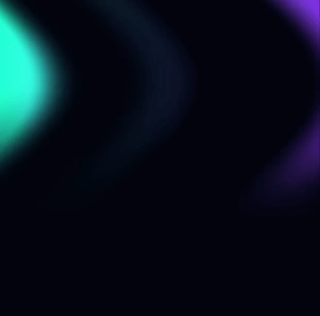

In diesem Praktikum wollen wir einen Verläufe darstellen, die sich räumlich,
zeitlich und in ihrer Farbe verändern.
Damit wollen wir Polarlichter simulieren.
Das Ergebnis soll dann in etwa wie die folgende Grafik aussehen:

Die folgenden Aufgaben setzen voraus, dass Sie die zugehörigen Vorlesungmaterialien vollständig durchgearbeitet haben: Vorlesung 4 (Rauschen)
🚧 Die Aufgaben werden zeitnah bereitgestellt.